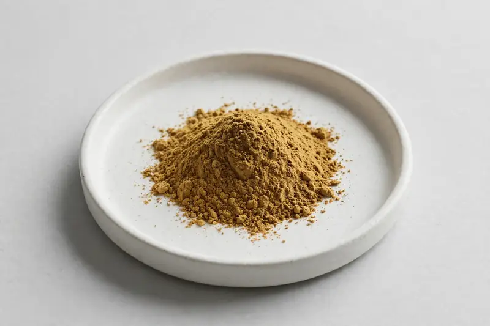

Vitex agnus-castus — a trending women's health botanical for capsule, tablet and powder formulations.

Overview
Chasteberry (Vitex agnus-castus) extract is a trending women's health botanical, standardised to agnuside and widely used in cycle-comfort and hormone-balance-positioned supplements. Demand has grown across US and EU markets in recent years. As a Xi'an-based trading company, we source through vetted partner producers and confirm each buyer's target specification honestly before quotation.
Specifications below reflect commonly requested options in the market — not a stock list. Share your target spec and we'll confirm exactly what we can supply, honestly.
| Specification | Details |
|---|---|
| Botanical identity | Vitex agnus-castus, fruit |
| Marker compound | Agnuside — commonly requested: 0.5% (HPLC) |
| Appearance | Yellow-brown to brown fine powder |
| Mesh size | Typically 80–100 mesh (confirm per inquiry) |
| Testing | COA/TDS arranged on request; scope agreed per your spec |
Applications
Documentation
We don't claim in-house labs or certifications we don't hold. COA and TDS documents can be arranged on request, and testing scope is agreed against your specification before supply.
FAQ
Related products
Berberis aristata
Key marker: Berberine
View specs →Purified mineral pitch
Key marker: Fulvic Acid
View specs →Eurycoma longifolia
Key marker: Eurycomanone
View specs →Epimedium sagittatum
Key marker: Icariin
View specs →Echinacea purpurea
Key marker: Echinacoside
View specs →Send your target spec and volumes — we'll respond with a tailored quotation.
Request a Quote